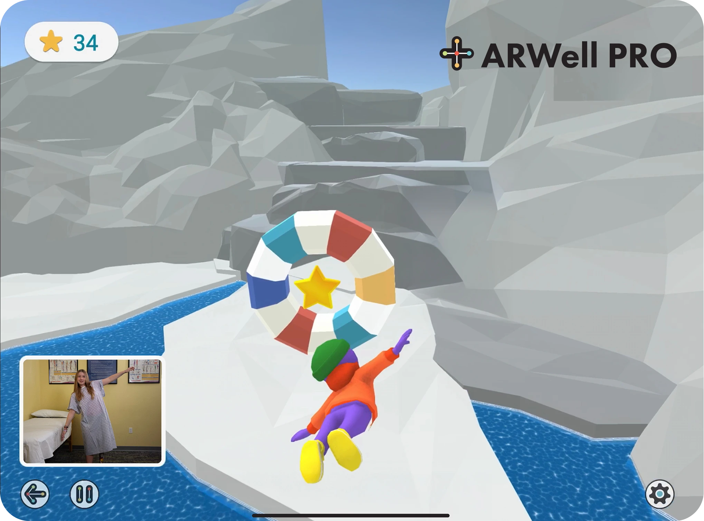
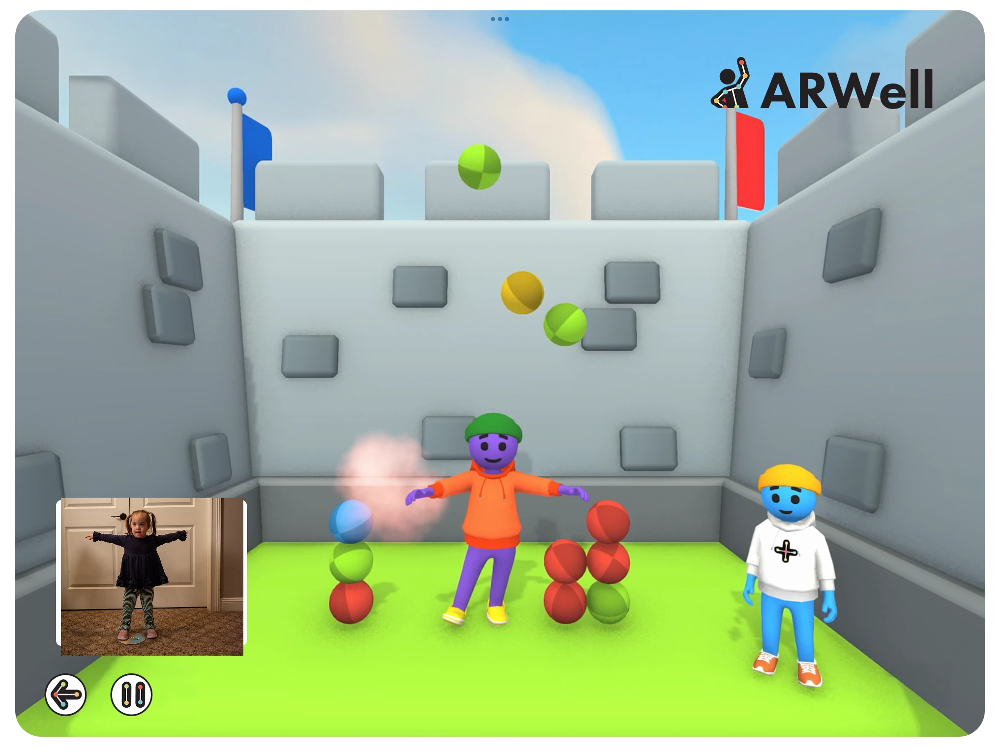
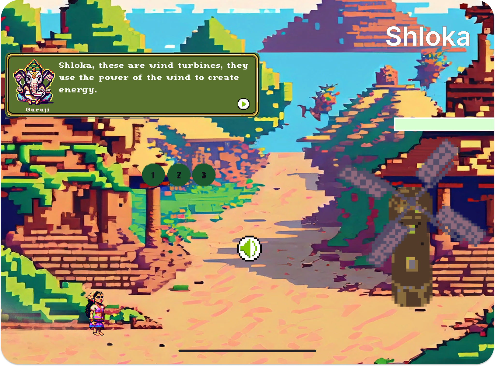

ARWell Pro

Identified therapist workflow friction as the core product problem and drove a 42% reduction in setup and documentation time.
I’m working on AI assistant experiences—using user and system signals to inform product priorities, quality tradeoffs, and decisions across voice, reliability, and recovery.
“An eyes-on-the-vision, flexible-on-the-route kind of girl.”
Two AR products where I turned complex user and clinical needs into clear priorities—and shipped changes that improved engagement, usability, and workflow efficiency.

Identified therapist workflow friction as the core product problem and drove a 42% reduction in setup and documentation time.

Prioritized the motivation and retention barriers in a movement-based AR exergame, helping raise its SUS score from 71.5 to 92.5.
Turning user and system insights into product direction, evaluation frameworks, and intuitive experiences across conversational AI, robotics, and wearable hardware.
Owned evaluation strategy across conversational AI, robotics, and wearable hardware, turning coverage and prioritization decisions into product impact.
Request Case Study →Exploring how LLMs can support curiosity, engagement, and active learning through game-like interaction.
Defined and validated a product framework for gamified AI learning, translating research into a product ecosystem that drove a 2.4× increase in learner immersion.
Try StudyCrafter AI →
Turning culturally grounded research into a validated game concept that made climate action more engaging, memorable, and easier to connect with.
Took a culturally grounded climate-action game from concept to validation, translating field research into a product that outperformed nine existing titles.
Try Shloka Now → Read the Paper here→ Best Paper